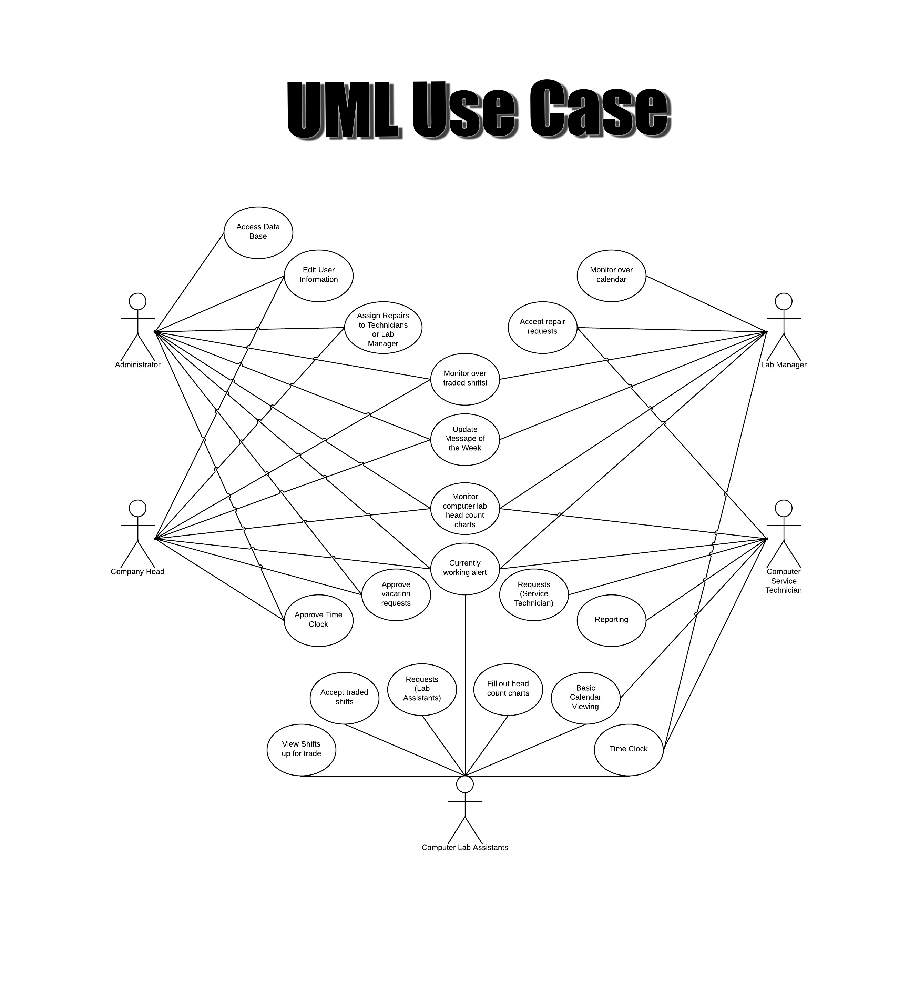

System Definition
This is an all-in-one system for managing the labs on campus. The system will be able to track and schedule employees, request supplies and repairs, and monitor the labs. The system will work as a time clock for the employees and allow them to schedule their shifts and vacations. The employees will be able to directly make a request to the company head for supplies and repairs which will be carried out by computer service technicians. The system will also provide a way to keep head counts to coordinate with Ball State administration policy. The company head will have full access to all parts of the system while other users will have different privilege based on their job.
User Requirements
- Administrator
- Access Data Base
- Everything the Company Head can do
- Company Head
- Edit user information
- Monitor over traded shifts
- Approve vacation requests
- Monitor over calendar
- Approve Time Clock
- Update Message of the Week
- Monitor computer lab head count charts
- Currently working alert
- Assign Repairs to Technicians or Lab Manager
- Lab Manager
- Monitor over traded shifts
- Monitor over calendar
- Update Message of the Week
- Monitor computer lab head count charts
- Currently working alert
- Accept repair requests
- Time Clock
- Computer Lab Assistants
- Request
- Vacations
- Shift trades
- Extra hours
- Lab repairs
- Lab supplies
- Time Clock
- Basic calendar viewing
- Fill out head count charts
- Currently working alert
- View Shifts up for trade
- Accept traded shifts
- Computer Service Technician
- Currently working alert
- Accept repair requests
- Basic calendar viewing
- Monitor computer lab head count charts
- Time Clock
- Request
- Vacations
- Extra Hours (Work as Lab Assistants)
- View Shifts up for trade
- Lab supplies
- Reporting
- Lab Printer Problems
- Other problems

Functional Requirements
- Different Login Privileges
- Shopping Cart used for Computer Lab Supplies
- Vacation Requests
- Shift Trading
- Calendar System
- Time Clock
- RSS Message of the Week
Data Requirements
- Different Login Data
- Ball State Email
- Password
- Different Registration Data
- Ball State Email
- Password
- Name
- Telephone Number
- Registration Code (Access Level ex. Admin/Company Head etc.)
- Shopping Cart (Computer Lab Supplies/Repairs Requests)
- Add
- View Cart
- Finalize/send Request
- Product: Current lab supplies available
- Name-->VARCHAR(50)
- Quantity-->tinyint
- SubmitterID-->int
- Date-->Date
- Vacation Requests
- Shift Trading
- Time Clock
- 24 Hour Clock
- Save Time Stamps
- Hours Worked
Others, Highlights
- Different Login Privileges
- Shopping Cart used for Computer Lab Supplies
- Vacation Requests
- Unique User Homepage (User clearance level)
- Secure Ball State Login
- Message of the Week
- Lab Related Problem Submission
- Lab Assistant Shift Trading
- Calendar System
- Work Time Clock (Similar to Kronos TimeKeeper)
{kind=link}